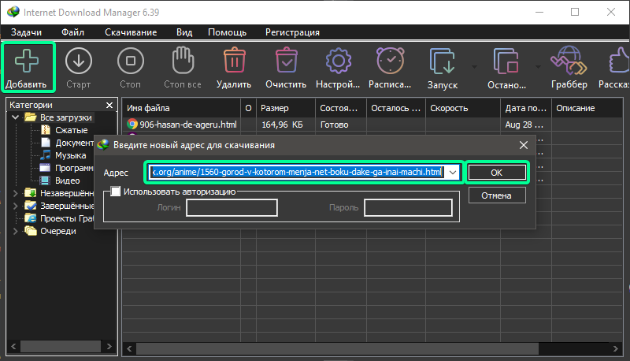
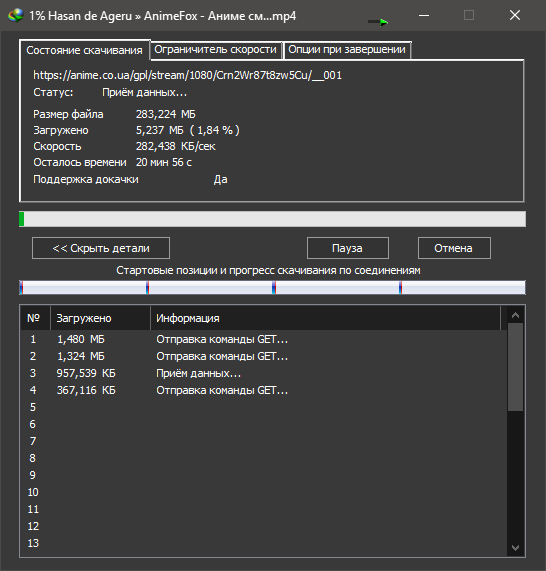
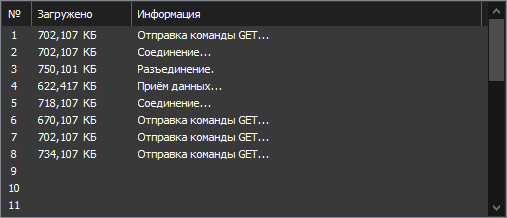

В роли сайта с искомым плеером будет https://animefox.org/ , да это хентай, HLS-шифрование ставят на особо ценный продукт, а не общедоступную классику...
Пруфы:
Код Гиас: Восставший Лелуш [ТВ-1]
Город, в котором меня нет...
Копируем ссылку web-страницы с видео в буфер обмена и переходим в программу, добавление, окей...

Status окно:

Сначало 1-4 потока с отправкой GET-запросов, позже программа увеличит их до ~8 [на усмотрение программы]:

Иногда сервер сбрасывает подключение, приложение предложит докачать видео и начнёться загрузка заново